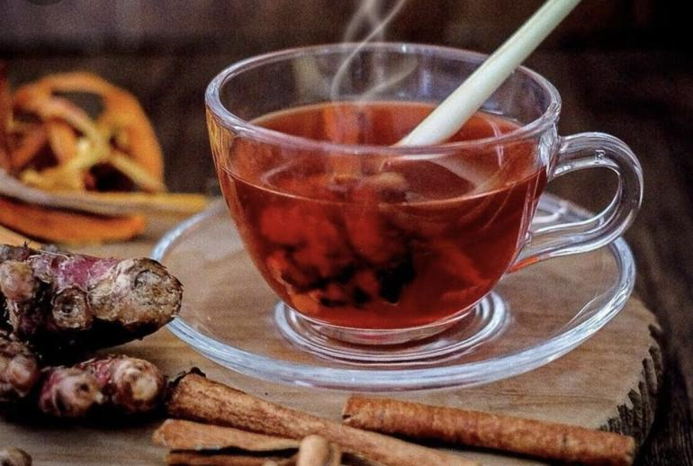
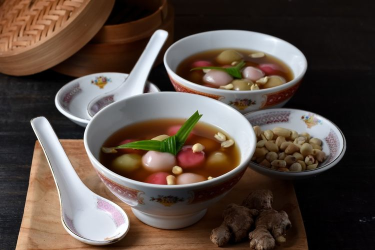

Uwuh
Uwuh
Wedang Uwuh adalah minuman tradisional khas Jawa Tengah, Indonesia. Minuman ini terkenal karena bahan-bahannya yang unik dan ramuan alami yang digunakan..
Lihat ResepRonde
Ronde
Ronde adalah minuman tradisional yang berasal dari Tionghoa-Indonesia. Minuman ini terkenal karena memiliki rasa yang kaya dan beragam, serta bahan-bahan unik yang digunakan.
Lihat ResepBajigur

Bajigur
Bajigur adalah minuman tradisional yang berasal dari Sunda, Jawa Barat, Indonesia. Minuman ini terkenal karena cita rasanya yang manis, gurih, dan hangat.
Lihat ResepBeras Kencur

Beras Kencur
Beras Kencur adalah minuman tradisional yang berasal dari Indonesia, khususnya Jawa. Minuman ini terkenal karena menggunakan beras dan kencur sebagai bahan utamanya. Beras Kencur memiliki cita rasa yang segar, harum, dan menyegarkan.
Lihat Resep